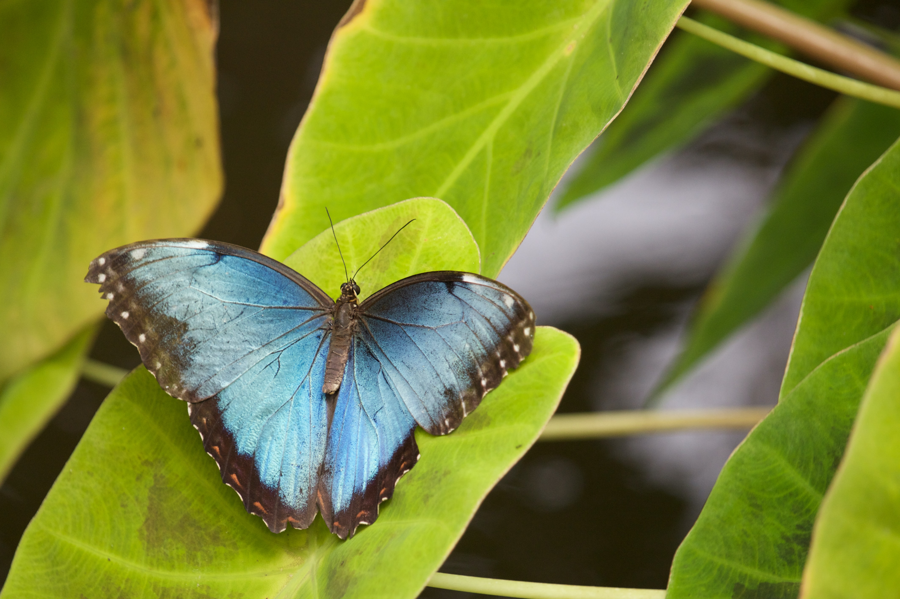
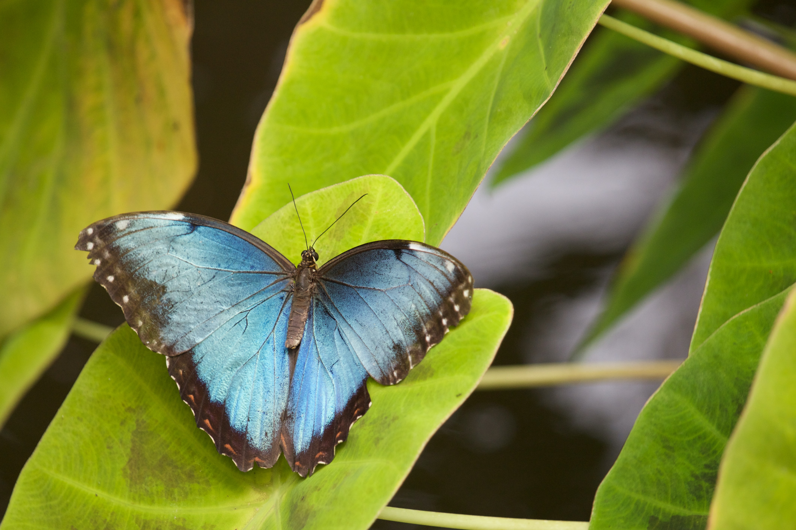

Butterfly Pictures (Thumbnails)
Below are some pretty pictures of butterflies,downloaded from the website unsplash,
with beautiful and freely-usable images. These images are placed in a single bootstrap



|
some lovely brightly coloured butterfiles
This is the simple page that shows a number of bootstrap components and the styles they provide to enhance
plain
HTML content- while also supporting a respective dispaly(screen rezing).
Firstly,at the top of the page,within a
Below are some pretty pictures of butterflies,downloaded from the website unsplash,
with beautiful and freely-usable images. These images are placed in a single bootstrap
|

|
The following image and text is held within a new
|
This is a picture of a butterfly by Erin Minuskin Here, the |
In the next
|
This is a picture of a butterfly by Brandon Green Another picture of a beautiful butterfly that has the class |
In the final
|
This is a picture of a butterfly by Andra C Taylor Jr. Here,the class  |
In this last section of the page, we have a nice table with some data from the 2021 United kingdom Butterfly
Monitoring Scheme(UKBMS).Here the table is styled with the bootstrap classes
| Species | Start Year | No.years with Index in 2021 | No, sites monitored in 2021 | 2021 rank | %change 2020-2021 |
|---|---|---|---|---|---|
| Swallowtail | 1976 | 45 | 16 | 23 | -24 |
| Dingy Skipper | 1976 | 46 | 637 | 13 | -11 |
| Grizzled | 1976 | 46 | 404 | 31 | -17 |
| Essex Skipper | 1977 | 45 | 1078 | 29 | 0 |
| Small Skipper | 1976 | 46 | 1918 | 39 | -16 |
| Lulworth Skipper | 1992 | 30 | 23 | 20 | -13 |
| Silver-spotted Skipper | 1979 | 43 | 74 | 16 | -40 |
ENGLAND Summary of changes table 2021 (extract) [https://ukbms.org/]
This then concludes the content in the
The next and final section is the